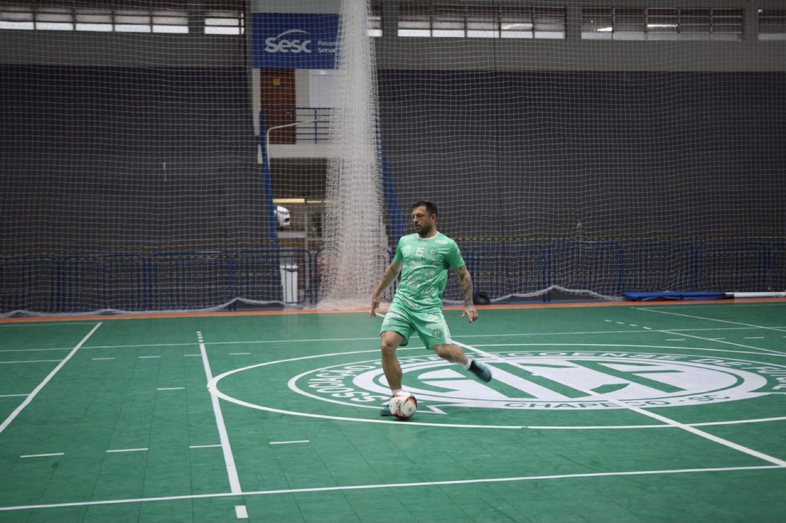
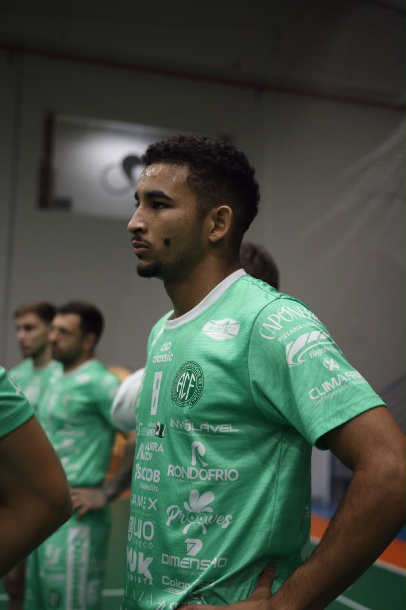
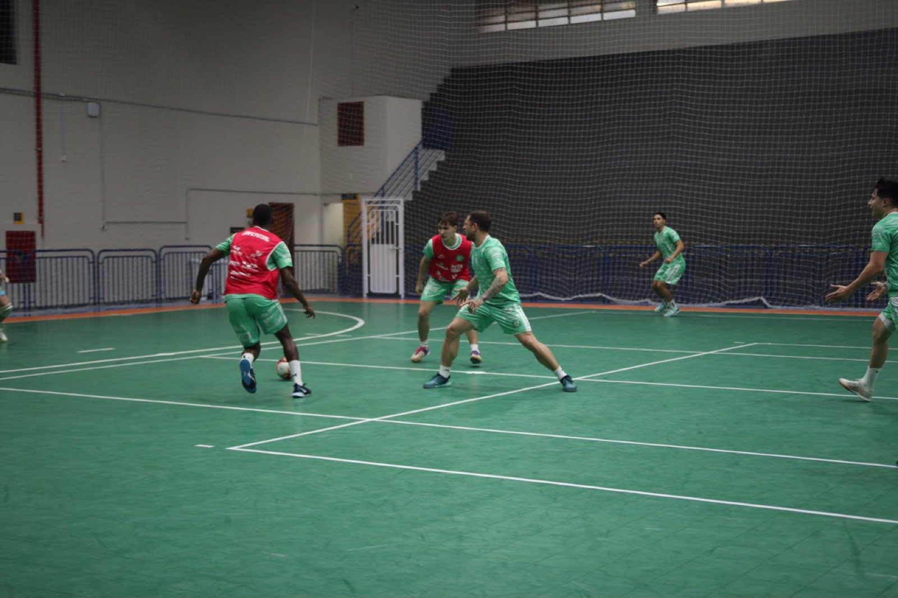

A semana marca o segundo compromisso da equipe Prefeitura de Chapecó/Chapecoense/Unochapecó no 3º Campeonato Brasileiro de Futsal. Nesta sexta-feira (24/7), o Verdão das Quadras recebe o São João do Jaguaribe (CE), às 19h15, no ginásio do SESC Chapecó, pela segunda rodada da competição. O time anfitrião contará com a estreia de um reforço para buscar mais uma vitória na disputa.

O grupo de jogadores e a comissão técnica da Chape Futsal vem trabalhando forte. O elenco tem atividades diárias em quadra e na academia, para se preparar da melhor maneira possível de olho no confronto diante dos cearenses. Os atletas irão treinar, inclusive, no dia da partida, às 8h, no SESC. A carga de treinamentos é visando mais um resultado positivo, já que no primeiro desafio o clube verde-branco ganhou por 3 a 0 do Criciúma, também em Chapecó. O Jaguaribe, por sua vez, estreou com um 3 a 3 contra o Atlético-PI, atual campeão, em Teresina.
Estreia confirmada
Por falar em estreia, a Chapecoense terá uma novidade para o jogo desta sexta-feira. Contratado recentemente, o pivô Toninho, 21 anos, está integrado ao plantel, possui condição legal para atuar e será relacionado. “Feliz de estar com o grupo, com o clube. Fui muito bem recebido. Estou me adaptando novamente ao futsal brasileiro”, disse o jogador, que desde setembro defendia o Nanzaby, da Indonésia. No início deste mês, ele se sagrou campeão mundial universitário pela seleção brasileira na Polônia. Pelo Brasil, também ganhou o Sul-Americano Sub-20 em 2024.

Sobre ingressos
A torcida pode adquirir os bilhetes nos seguintes locais: Loja Oficial da Chape Futsal (na rua Paulo Marques, entre as avenidas Fernando Machado e Porto Alegre), na Loja iXap Sports (na avenida Getúlio Vargas, entre as ruas Paulo Marques e Vitório Cella) e no site ingressojogo.com.br. Também haverá tickets na bilheteria do ginásio, na hora da partida, mas a diretoria recomenda a compra antecipada, devido à grande procura.
São dois lotes de entradas. No primeiro, o valor do ingresso é de R$ 20,00 e, no segundo, que irá abrir quando a carga inicial for esgotada, o preço será de R$ 25. A meia-entrada é direcionada para pessoas com direito garantido por lei e custa R$ 10,00.

É importante lembrar que todos os torcedores, tanto com ingresso ou portando a carteirinha de sócio devem levar um quilo de alimento não perecível. As doações serão destinadas ao programa Mesa Brasil, mantido pelo SESC. Menores até 12 anos têm acesso gratuito e não precisam retirar a cortesia. Porém, as crianças devem estar acompanhadas por um responsável e apresentar documento de identificação na portaria.
Crédito das fotos: @rogersilva_fotografia/@achapefutsal